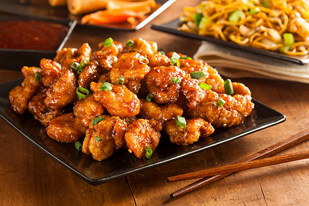

Homepage

-
1 cup orange marmalade
-
1/2 cup Kansas City-style BBQ sauce
-
1/4 cup low sodium soy sauce
-
1 (1 pound) bag frozen fully cooked chicken nuggets
-
Sliced green onions (optional)
-
Sesame seeds (optional)
-
Preheat the oven to 400 degrees F (200 degrees C). Place frozen nuggets in
a single layer on a baking sheet.
-
Bake in the preheated oven until hot and crispy, 11 to 13 minutes, or
according to package directions.
-
Meanwhile, whisk marmalade, BBQ sauce, and soy sauce together in a small
saucepan and heat over low heat until hot, about 5 minutes.
-
Place nuggets in a large bowl. Drizzle sauce over the top. Toss to coat.